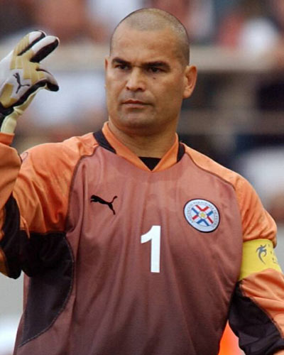
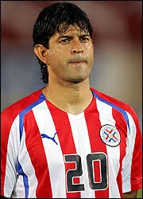
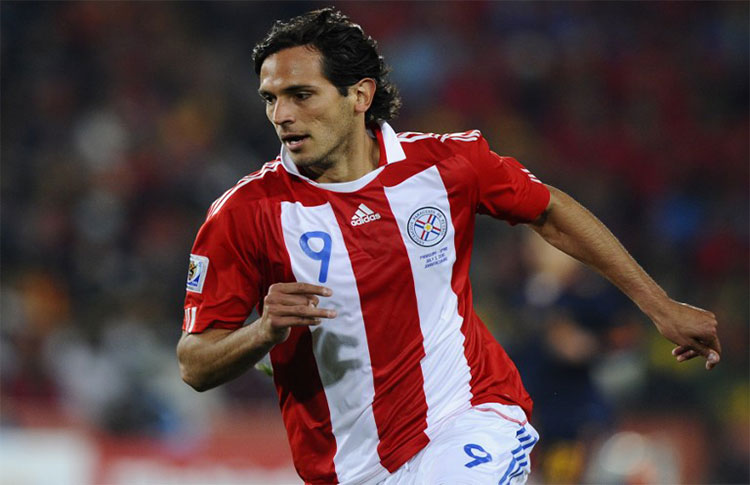
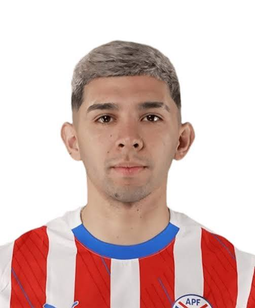

PARAGUAY
La garra guaraní busca renacer en el escenario internacional, apelando a su histórica solidez defensiva y combatividad para volver a ser el rival incómodo de América.





Alcanzaron los cuartos de final en 2010 en una histórica campaña donde pusieron en jaque a la campeona España, registrando su mejor participación en Copas del Mundo.
Paraguay cuenta con un respetado palmarés continental tras coronarse campeón de la Copa América en las ediciones de 1953 y 1979.
Reconocidos históricamente a nivel mundial por edificar equipos tácticamente impecables, defensas feroces y un temible juego aéreo.
CONMEBOL (Sudamérica)
La Albirroja / Los Guaraníes
Consolidar el recambio generacional. Romper las malas rachas recientes y volver a plantarse con autoridad en las fases de eliminación directa ante las grandes potencias.